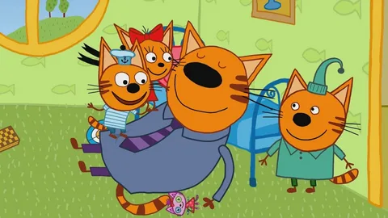
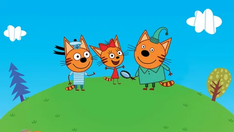
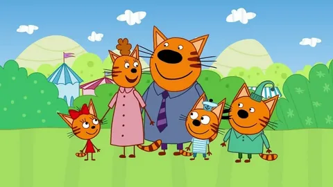
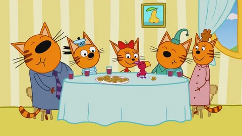
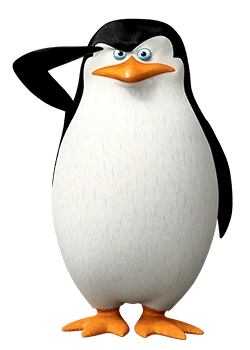
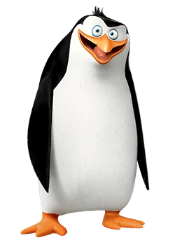

главные герои:
Коржик — непоседливый рыжий кот из мультфильма "Три Кота", одетый в голубую тельняшку. Коржик немного забывчивый, но очень активный и подвижный.
Компот — полосатый, рыжий кот, похож на своих брата и сестру. Очень любит кушать сладости, поэтому он довольно пухленький. Одет Компот в бирюзовую ночнушку с двумя пуговицами и воротником. На голове у него шапка, того же цвета.
Карамелька — самая умная из трёх детей. Коронная фраза — «Я знаю, что надо делать!», так как в большинстве серий именно она находит выход из ситуации.
моменты из мультфильма:




Пингвины

Шкипер безусловный лидер, и его авторитет и опыт непререкаемы, по типу темперамента является холериком. Он считает, что друг - это враг, который ещё не напал на тебя, но, несмотря на такую параноидальную черту характера, Шкипер хороший друг и всегда готов сделать всё, чтобы выручить товарищей из беды.

Рико - психопат мирового класса. Он питает невероятную любовь к взрывам и прочим разрушениям. Любит пластиковую куклу. Единственный из пингвинов, о ком известно, что он родился в Антарктике, а не в неволе.